|
|
||||||||||||||||||
|
|
||||||||||||||||||
|
Для хранения таблиц, насчитывающих миллионы записей обычно используется внешняя память компьютера с файловой системой организации данных. Как правило - это жесткий диск, объем которого на несколько порядков превосходит объем оперативной памяти. Диск состоит из дорожек, которые делятся на секторы. Размер отдельного сектора достигает нескольких килобайтов. Особенностью организации ввода и вывода на жесткий диск является прямой доступ к отдельным секторам диска, чтение или запись сектора целиком, сравнительно большое время доступа к сектору (до 20 миллисекунд). Файл рассматривается как последовательность записей, размещенных в секторах диска. Записью может быть что угодно: обычное число, строка текста, сложная структура с многими полями. Поля могут иметь либо фиксированную длину в байтах, либо переменную. Файлы с записями фиксированной длины широко используются в системах управления базами данных для хранения данных со сложной структурой. Файлы с записями переменной длины, как правило, используются для хранения текстовой информации [1]. Записи файла обычно группируются в блоки, соответствующие секторам диска: 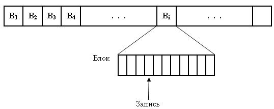
Количество записей, размещенных в блоке, определяется размером блока (сектора) в байтах, который определяется устройствами и программным обеспечением компьютера. Количество записей в блоке зависит от соотношения размера блока и размера отдельной записи. Рассматривая операции с файлами, можно считать, что файлы - это последовательности записей или блоков с записями, над которыми можно выполнять операции поиска, вставки и удаления. Учитывая описанные выше особенности организации данных в файлах, операции используют прямой доступ к записям или блокам и, как правило, считывание блоков с записями целиком (блочный доступ ). При блочной организации файла предполагается, что затраты на выполнение операции пропорциональны количеству блоков, которые нужно считать в основную память или записать из основной памяти на устройство внешней памяти. Если записи не сгруппированы в блоки, то затраты на выполнение операций пропорциональны количеству записей. В файлах для поиска записей используются указатели на адреса записей в файле. Одним из способов представления адресов записи является задание файлового указателя: физического адреса блока на внешнем устройстве, содержащего интересующую нас запись, и смещения в байтах от начала блока до этой записи. Часто в системах баз данных при организации данных используются несколько указателей на запись. Следствием этого является то, что записи приходится считать закрепленными: их нельзя перемещать во внешней памяти, поскольку не исключено, что какой-либо другой указатель, ссылающийся на перемещенную запись будет указывать на неправильный адрес этой записи. Простейшим и наименее эффективным способом реализации операций с файлами является использование примитивов чтения и записи файлов, принятых в языках программирования. В этом случае записи могут хранится в файле в любом порядке. Поиск записи с указанными значениями в определённых полях осуществляется путем полного перебора всех записей в файле и проверки каждой его записи на наличие в ней заданных значений. Вставку в файл можно выполнять путем добавления записи в конец файла. При удалении записи после ее поиска путем полного перебора выполняется либо сдвиг всех последующих записей на одну позицию к началу файла, либо пометка места с удаленной записью признаком "удалено", если записи закрепленные. В последнем случае нельзя смещать оставшиеся записи на место удаленной, нельзя вставлять на ее место новую запись. Вместо сдвига путем пометки выполняется логическое удаление записи из файла, но её место в файле остаётся незанятым. В случае использования другого указателя на удалённую запись по признаку "удалено" можно понять, что указываемая запись уже удалена, и, например, присвоить этому указателю значение nil. Существуют два способа помечать удаленные записи: заменить запись на какое-то значение, которое никогда не может стать значением «настоящей» записи, или предусмотреть для каждой записи специальный бит удаления. Очевидным недостатком последовательного файла является то, что операции с такими файлами выполняются медленно. Выполнение каждой операции требует, чтобы был прочитан весь файл, а после этого еще и выполняется перезапись некоторых блоков или записей. Требуется сократить количество обращений к файлу. Существуют такие формы таблиц в файлах, которые обеспечивают эффективный доступ к записям , обрабатывая лишь небольшую часть файла. Такие таблицы предусматривают наличие у каждой записи ключа поиска, то есть поля или совокупности полей, которое уникальным образом идентифицирует каждую запись. Поиск записи, когда заданы значения её ключевых полей, является типичной операцией, на обеспечение максимальной эффективности которой ориентированы многие широко распространенные способы организации файловых таблиц. В таких таблицах записи регистрируются с помощью индекса - пары "ключ - файловый указатель на запись или блок с записью". Индексы записей регистрируются в файловой структуре поиска, которая может быть размещена в файле с записями или в отдельном индексном файле. Структура поиска с индексами записей должна обеспечивать быстрый поиск индекса нужной записи по ключу. Наиболее известными файловыми структурами поиска являются плотный индексный файл, разреженный индексный файл, хешированный файл, Б - дерево поиска [1 - 4].
Плотный индексный файлПлотный индексный файл предполагает размещение записей в файле в произвольном порядке и создание другого файла с индексами, с помощью которого будут отыскиваться требуемые записи. Этот дополнительный файл называется плотным индексом. Плотный индекс состоит из индексов (k, р), где р - указатель на запись с ключом k в основном файле. Все индексы в индексном файле отсортированы по значению ключа.
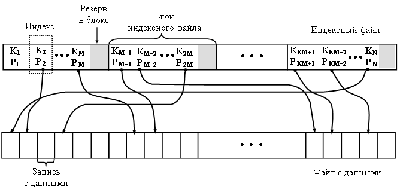
Индексный файл разделен на блоки для блочного доступа. В каждом блоке выделен резерв для новых индексов при добавлении в файл с данными новых записей. Разбиение файла с данными на блоки не обязательно, поскольку индекс каждой записи фиксируется в плотном индексе и можно выполнять прямой доступ к записи по файловому указателю записи, считанному из индексного файла При использовании такой организации плотный индекс служит для поиска в основном файле записи с заданным ключом. Благодаря упорядоченности ключей, в индексном файле можно организовать двоичный поиск блока с заданным ключом, что существенно сокращает число обращений к индексному файлу по сравнению с полным перебором всех блоков индекса. При добавлении новой записи она может быть размещена в конце файла с данными или по месту удаленной ранее записи (если записи в файле с данными не закреплены). Индекс новой записи размещается в соответствующем блоке плотного индекса с соблюдением упорядоченности ключей индексов. Для этого методом двоичного поиска отыскивается соответствующий блок и в него записывается индекс новой записи. При вставке нового индекса может возникнуть переполнение блока индексного файла, когда резерв для новых индексов в блоке исчерпан. В этом случае необходима перестройка индексного файла, заключающаяся в вытеснении части индексов в последующий блок или расщеплении переполненного блока. Расщепление выполняется путем создания нового блока индексного файла и вставки его вслед за переполненным блоком. Часть индексов переносится из переполненного блока в новый блок индекса. Чтобы удалить запись, прежде выполняется двоичный поиск по ключу блока индексом записи и затем запись удаляется из файла с данными во месту. указанному файловым указателем индекса. По месту записи устанавливается бит удаления и удаляется соответствующий индекс в плотном индексе (возможно, также устанавливая бит удаления индекса). Файловый указатель удаленной записи можно зафиксировать во вспомогательной структуре для того чтобы разместить на этом месте новую запись при выполнении операции включения.
Разреженный индексный файлЕще одним распространенным способом организации индексного файла является поддержание файла с данными в отсортированном по значениям ключей порядке. Чтобы облегчить процедуру поиска, можно создать второй файл, называемый разреженным индексом, который состоит из пар (k, p), где k-значение ключа, а p-файловый указатель блока, в котором значение ключа первой записи равняется k. Этот разреженный индекс также отсортирован по значениям ключей. 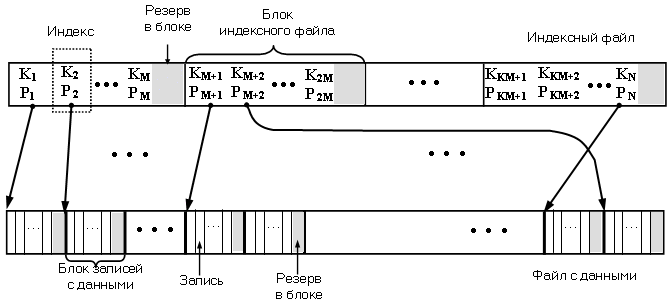
Чтобы
отыскать запись с заданным ключом k,
надо сначала просмотреть индексный
файл, отыскивая в нем индекс (k,p). В
действительности отыскивается блок
индекса с наибольшим ключом x таким,
что x Разработано несколько стратегий просмотра индексного файла. Простейшим из них является линейный поиск. Индексный файл по блокам читается с самого начала, пока в очередном блоке не встретится индекс (k, p) или (x, p), причем x > k. В последнем случае у предыдущего индекса (y, p1) должно быть y < k, и если запись с ключом k действительно существует, то она находится в блоке p1. Линейный поиск годится лишь для небольших индексных файлов. Более эффективным методом является двоичный поиск.. Допустим, индексный файл хранится в блоках b1,b2, . . , bn. Чтобы отыскать значение ключа k, берется средний блок bn/2 и ключ k сравнивается со значением ключа в первом индексе данного блока. Если ключ k меньше, чем ключ в первом индексе, то продолжается двоичный поиск нужного блока среди блоков b1 . . bn/2-1. Если ключ k больше ключа в первом индексе блока bn/2, то выполняется поиск в блоке bn/2 ключа x > k и чтение блока p1 из файла данных для дальнейшего поиска записи с ключом k в считанном блоке. Если ключ k больше ключа в первом индексе блока bn/2+1 , то продолжается двоичный поиск нужного блока индекса среди блоков bn/2+1 . . bn. При использовании двоичного поиска нужно проверить лишь log2(n+1) блоков индексного файла.
Пример: поиск записи с ключом 81. 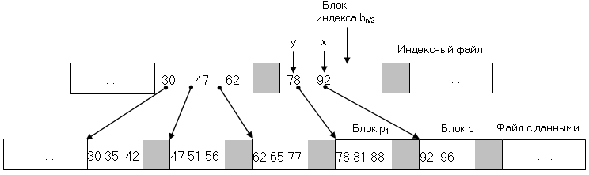
Чтобы создать индексированный файл, в файле с данными записи сортируются по значениям их ключей, а затем распределяются по блокам в возрастающем порядке ключей. В каждый блок можно упаковать столько записей, сколько туда помещается. Однако в каждом блоке можно оставить место для дополнительных записей, которые могут вставляться туда впоследствии. Преимущество такого подхода заключается в том, что вероятность переполнения блока, куда вставляются новые записи, в этом случае оказывается ниже (иначе надо будет обращаться к смежным блокам). После распределения записей по блокам создается индексный файл: просматривается по очереди каждый блок в файле с данными и первый ключ каждого блока записывается в очередной блок индексного файла. Подобно тому, как это сделано в основном файле, в блоках индексного файла можно оставить резерв на количество индексов для последующего роста. Допустим, что есть отсортированный файл записей, хранящихся в блоках b1,b2, . . ,bn. Чтобы вставить в этот отсортированный файл новую запись, используется индексный файл, с помощью которого определяется, какой блок bi должен содержать новую запись. Если новая запись умещается в блок bi , она туда помещается в правильной последовательности. Если новая запись становится первой записью в блоке bi , тогда выполняется корректировка индексного файла. Если новая запись не умещается в блок bi , то можно применить одну из нескольких стратегий. Простейшая из них заключается в том, чтобы перейти на блок bi+1 (который можно найти с помощью индексного файла) и узнать, можно ли последнюю запись bi переместить в начало bi+1. Если можно, последняя запись из bi перемещается в bi+1 , а новую запись можно затем вставить на подходящее место в bi . В этом случае нужно скорректировать индекс в индексном файле для bi+1 и, возможно, для bi. Если блок bi+1 так же заполнен или если bi является последним блоком, то в конец файла с данными записывается новый блок. Новая запись вставляется в этот новый блок, который должен размещаться вслед за блоком bi . Затем индекс нового блока записывается в соответствующий блок индексного файла. В новый блок файла с данными можно перенести некоторую часть записей из переполненного блока bi , восстановив тем самым резервное место в блоке bi . При добавлении индексов новых блоков в индексный файл также может произойти переполнение какого либо блока индексного файла. в этом случае выполняется перестройка индексного файла, подобная перестройке плотного индексного файла.
Хешированный файлХеширование - широко распространенный метод обеспечения быстрого доступа к информации, хранящейся во вторичной памяти. Записи файла распределяются между так называемыми сегментами, каждый из которых состоит из связного списка одного или нескольких блоков внешней памяти. Такая организация хешированного файла подобна хеш - таблице с цепочками коллизий в оперативной памяти. 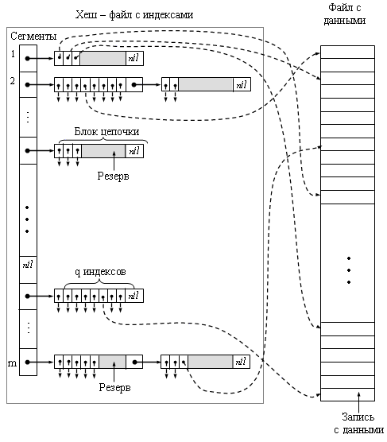 Имеется таблица сегментов, содержащая m указателей, по одному на каждый сегмент. Каждый указатель в таблице сегментов представляет собой физический адрес первого блока связного списка блоков для соответствующего сегмента. Сегменты пронумерованы от 0 до m-1. Хеш-функция h(k) отображает каждое значение ключа в одно из целых чисел от 1 до m . Если k –ключ, то h(k) является номером сегмента, который содержит индекс записи с ключом k (если такая запись вообще существует). Блоки, составляющие каждый сегмент, образуют связный список. Таким образом, заголовок i-го блока содержит файловый указатель на (i+1)-й блок. Последний блок сегмента содержит в своём заголовке nil - указатель. Каждый блок содержит несколько индексов с файловыми указателями на записи, хранящиеся в отдельном файле с данными. Если размер таблицы сегментов невелик, её можно хранить в основной памяти. В противном случае ее можно хранить в последовательных блоках в начале хеш - файла. Если нужно найти запись с ключом k, вычисляется h(k) и определяется файловый указатель на элемент таблицы сегментов, содержащий указатель на первый блок списка сегмента. Затем последовательно считываются блоки из списка сегмента , пока не обнаружится блок, который содержит запись с ключом k. Если исчерпаны все блоки в связном списке для сегмента h(k), то ключа k нет ни в одной из записей хешированного файла. Такая
структура оказывается вполне
эффективной при доступе к записям по
ключу. Среднее количество обращений к
блокам, требующееся для выполнения операций
над таблицей приблизительно равно
среднему количеству блоков в сегменте,
которое равно n/(q Чтобы вставить запись с ключом k, нужно сначала проверить, нет ли в файле записи с таким же значением ключа. Если такая запись есть, то выдается сообщение об ошибке, поскольку предполагается, что ключ уникальным образом идентифицирует каждую запись. Если записи с ключом k нет, то вставляется новая запись в первый же блок цепочки для сегмента h(k), в который эту запись удается вставить. Если запись не удается вставить ни в один из существующих блоков сегмента h(k) ввиду отсутствия резерва в блоках, в хеш - файле создается новый блок, в который будет помещена эта запись. Этот новый блок затем добавляется в конец списка блоков сегмента h(k). Чтобы удалить запись с ключом k, нужно сначала найти эту запись, а затем установить ее бит удаления в файле с данными. Одновременно необходимо удалить индекс этой записи из соответствующего блока списка сегмента h(k). Еще одной возможной стратегией удаления (которой нельзя пользоваться, если запись закрепленная) является замена удаленной записи на последнюю запись в цепочке блоков сегмента h(k). Если такое изъятие последней записи приводит к опустошению последнего блока в сегменте h(k), указатель на этот пустой блок можно сохранить в дополнительной структуре для повторного использования или вернуть файловой системе. Хорошо продуманная организация файлов с хешированным доступом требует лишь незначительного числа обращений к блокам при выполнении каждой операции. Если функция хеширования хорошая и m = n / q, тогда средняя длина списка сегмента равна единице. Если не учитывать обращения к блокам, которые требуются для просмотра таблицы сегментов, типичная операция поиска данных по ключу потребует лишь двух обращений к блоку сегмента и к записи в файле с данными, а операции вставки, удаления или изменения потребуют трех обращений.. Если среднее количество записей в сегменте намного превосходит количество записей, которые могут уместиться в одном блоке, можно периодически реорганизовывать таблицу сегментов, удваивая количество сегментов и деля каждый сегмент на две части.
Внешние деревья поиска.Для хранения таблиц во внешней памяти можно использовать древовидные структуры В - дерево и В+ - дерево, которые особенно удачно подходят для представления внешней памяти и стали стандартным способом организации индексных файлов в системах баз данных. Обобщением дерева двоичного поиска является m - арное дерево, в котором каждый узел имеет не более m сыновей. Так же, как и для деревьев двоичного поиска, считается, что выполняется следующее условие: если n1 и n2 являются двумя сыновьями одного узла и n1 находится слева от n2, тогда все потомки узла n1 оказываются меньше потомков узла n2. Однако в данном случае существует проблема хранения узлов в файлах, когда файлы хранятся в виде блоков внешней памяти. Правильным применением идеи разветвленного дерева является представление об узлах как о физических блоках на диске. Внутренний узел содержит указатели на свои m сыновей, а так же m-1 ключевых значений, которые разделяют потомков этих сыновей. Листья так же являются блоками. Эти блоки содержат файловые указатели на записи файла с данными. Использование m - арного дерева поиска значительно сокращает число обращений к блокам и время поиска записи по сравнению с деревом двоичного поиска, состоящего из n узлов. Однако нельзя сделать m сколько угодно большим, поскольку, чем больше m, тем больше должен быть размер блока. Считывание и обработка более крупного блока занимает больше времени, поэтому существует оптимальное значение m, которое позволяет минимизировать время, требующееся для просмотра внешнего m - арного дерева поиска. На практике значение, близкое к такому минимуму, получается для довольно широкого диапазона величин m. В-деревоБ-дерево – сбалансированное дерево, удобное для хранения информации на дисках [1-4]. Характерным для Б-дерева является его малая высота h. Представление информации во внешней памяти в виде Б-дерева стало стандартным способом в системах баз данных. В Б-дереве узел может иметь много сыновей, на практике до тысячи. Количество сыновей (максимальное) определяет степень Б-дерева. Узлы Б-дерева содержат не один элемент, а группу элементов с суммарным объемом в один блок файла, который обычно по размеру соответствует одному сектору диска. Чтобы уменьшить количество операций чтения-записи на диск при поиске элемента в Б-дереве, нужно максимально уменьшить его высоту. Для этого степень Б-дерева делается максимальной. Типичная степень узла – (50-2000). Она зависит от соотношения размера сектора и размера отдельного элемента. Например, Б-дерево степени 1000 и высоты 2 может хранить более миллиарда ключей. 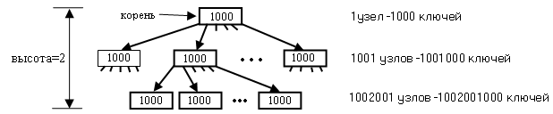
Общая схема обработки отдельных узлов B - дерева выглядит так: 1. . . . 2. x ← указатель на какой-либо узел 3. Disk_Read(x) 4. обработка и изменение узла х 5. Disk_Wirte(x) 6. операции, которые только используют узел х, но не изменяют его 7. . . .
Узел-корень дерева обычно всегда хранится в ОП, для доступа к остальным ключам требуется всего 2 операции чтения с диска.
Представление Б-дереваКак и в других деревьях, данные и ключи хранятся в узлах дерева. Обычно данные представлены в виде файлового указателя на запись в файле с данными. При перемещении в B - дереве ключа вместе с ключом перемещается и указатель. В отличие от 2-3 дерева ключи и дополнительная информация размещается не только в листьях, но и во внутренних узлах дерева. Хотя возможна организация Б-деревьев, в которых дополнительная информация хранится только в листьях, а во внутренних узлах – только ключи и указатели на сыновей (B+ - дерево). Это экономит память во внутренних узлах и позволяет увеличить их степень при том же размере сектора. Узел B - дерева хранит:
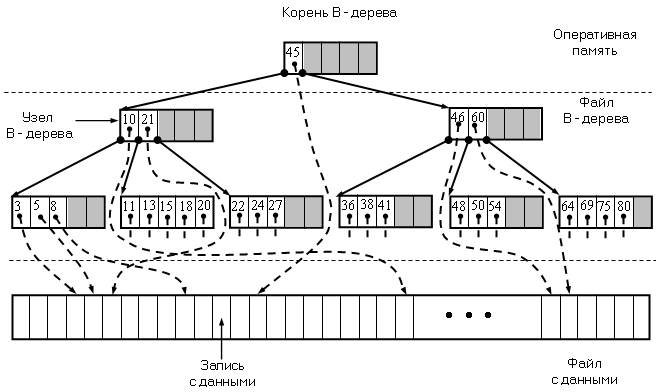 Узел х, хранящий n[x] ключей, имеет n[x]+1 сыновей. Хранящиеся в х ключи key1[x], . . . , keyn[x][x] служат границами, разделяющими всех потомков узла на n[x]+1 групп. За каждую группу отвечает один из сыновей х - pi[x]. Алгоритм поиска в Б-дереве сравнивает искомый ключ с границами в узле х и выбирает один из n[x]+1 путей для дальнейшего поиска. Все листья находятся на одной глубине, равной высоте дерева h. Число ключей, хранящихся в одном узле, ограничено сверху и снизу единым для Б-дерева числом t, где t – минимальная степень дерева (t ≥ 2). Каждый узел, кроме корня содержит минимум t - 1 ключей и t сыновей. Если дерево не пусто, то в корне должен храниться хотя бы один ключ. В узле хранится не более 2t - 1 ключей, и внутренний узел имеет не более 2t сыновей. Узел, хранящий 2t - 1 ключей, называется полным. Если t=2, то у каждого внутреннего узла может быть 2, 3 или 4 сына и такое дерево называется 2-3-4 деревом. Высота
B - дерева оценивается формулой 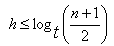 То есть, временная сложность операций для Б-дерева оценивается как O(logt n).
Операции для Б-дереваСчитаем, что корень дерева всегда находится в оперативной памяти и операция Disk_Read для корня не выполняется. Но когда корень изменяется, его нужно сохранять на диске. Все узлы, передаваемые операциям, как входные параметры, уже считаны с диска.
Поиск в Б-деревеРассмотрим рекурсивную операцию B_Tree_Search, параметрами которой является указатель х на корень поддерева и ключ k искомого элемента. Операция вызывается первоначально для корня дерева B_Tree_Search(root[T], k). При нахождении в дереве элемента с заданным ключом операция возвращает пару (y, i), где у – узел Б-дерева, i – порядковый номер указателя , для которого keyi [y]=k. Иначе операция возвращает nil. B_Tree_Search(x, k) 1. i ← 1 2. while i ≤ n[x] and k > keyi [x] 3. do i ← i+1 4. if i ≤ n[x] and k = keyi [x] 5. then return di 6. if leaf [x] = TRUE 7. then return nil 8. else Disk_Read (pi [x]) 9. return B_Tree_Search (pi [x], k)
При проходе по Б-дереву число обращений к диску O (logt n).
Создание пустого Б-дереваЧтобы построить дерево, сначала создается пустое дерево с помощью операции B_Tree_Create, а затем в него включаются элементы с помощью операции B_Tree_Insert. Обе эти операции используют вспомогательную операцию Allocate_Node, которая выделяет на диске место для нового узла. Эта операция занимает O(1) времени и не использует операцию Disk_Read.
B_Tree_Create(T) 1. x ← Allocate_Node() 2. leaf [x] ← TRUE 3. n[x] ← 0 4. Disk_Write (x) 5. root[T] ← x
Операция требует O (1) времени, так как выполняется одно обращение к диску.
Операция расщепления узла Б-дереваКлючевым моментом добавления элемента в дерево является разбиение полного узла y с 2t - 1 ключами на два узла, имеющие по t - 1 элементов в каждом. При этом ключ-медиана отправляется к родителю узла y – x. Этот ключ становится разделителем двух полученных узлов. Ключ-медиана вставляется в упорядоченное множество ключей узла х.
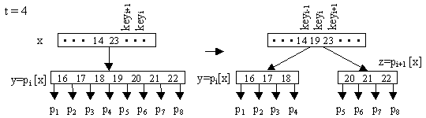 Элементы с большими, чем медиана ключами, переходят в новый узел z. Входными параметрами операции является неполный узел х, индекс i и полный узел y (y = pi [x]).
B_Tree_Split (x, i, y) 1 z ← Allocate_Node() 2 leaf [z] ← leaf [y] 3 n [z] ← t–1 4 for j ← 1 to t–1 5 do keyj [z] ← keyt+j [y] 6 if not leaf [y] 7 then for j ← 1 to t 8 do pj [z] ← p t+j [y] 9 n [y] ← t -1 10 for j ← n [x]+1 downto i +1 11 do pj+1 [x] ← pj [x] 12 pj+1 [x] ← z 13 for j ← n [x] downto i 14 do keyj+1 [x] ← keyj [x] 15 keyi [x] ← keyt [y] 16 n [x] ← n [x]+1 17 Disk_Write [x] 18 Disk_Write [y] 19 Disk_Write [z]
Добавление элемента в Б-деревоВходными параметрами функции включения в B - дерево - T являются ключ k и файловый указатель на запись в файле с данными - fd. Операция при включении проходит по одному из путей поиска от корня к месту включения, которое является листом B - дерева. Для этого требуется время O(th)=O(t logt n) и O(h) = O(logt n) обращений к диску. На пути поиска встречающиеся полные узлы расщепляются с помощью операции B_Tree_Split.
B_Tree_Insert (T, k, fd ) 1 r ← root [T] 2 if n [r] = 2t –1 3 then 4 s ← Allocate_Node( ) 5 root ← s 6 leaf [s] ← FALSE 7 n [s] ← 0 8 p1 [s] ← r 9 B_Tree_Split (s, 1, r) 10 B_Tree_Insert_Nonfull (s, k, fd ) 11 else B_Tree_Insert_Nonfull (r, k, fd )
Точкой роста Б-дерева является не лист, а корень. Новый корень содержит ключ-медиану старого корня. Сделав корень неполным (или он не был таковым с самого начала), мы вызываем операцию B_Tree_Insert_Nonfull (x, k, d), которая добавляет индекс (k, d) в поддерево с корнем в неполном узле х. Это рекурсивная операция.
B_Tree_Insert_Nonfull (x, k, fd) 1 i ← n [x] 2 if leaf [x] = TRUE 3 then while i ≥ 1 and k < keyi [x] 4 do keyi+1 [x] ← keyi [x] 5 fdi+1 [x] ← fdi [x] 6 i ← i –1 7 keyi+1 [x] ← k 8 fdi+1 [x] ← fd 9 n [x]← n [x]+1 10 Disk_Write [x] 11 else while i ≥ 1 and k< keyi [x] 12 do i ← i –1 13 i ← i+1 14 y ← Disk_Read (pi [x]) 15 if n[y] = 2t – 1 16 then B_Tree_Split (x, i, y) 17 if k> keyi [x] 18 then i ← i+1 19 B_Tree_ Insert_Nonfull (y, k, fd)
Пример включения в B - дерево элементов с ключами 2, 17, 12: 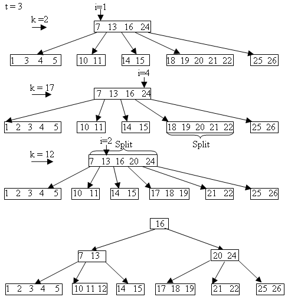 В+ - деревоВ+ - дерево – это особый вид сбалансированного m - арного дерева, которое позволяет выполнять операции поиска, вставки и удаления записей из внешнего файла с гарантированной производительностью для самой неблагоприятной ситуации. С формальной точки зрения В+ - дерево порядка m представляет собой m - арное дерево поиска, характеризующееся следующими свойствами:
В+
- дерево
можно рассматривать как иерархический
индексный файл, каждый узел в котором занимает
блок во внешней памяти. Корень В+ - дерева
является индексом первого уровня.
Каждый внутренний узел в В+ - дереве
имеет форму (p0, key1, p1,
key2, p2 , . . . ,keyn, pn), где рi
является указателем на i - го сына, 0
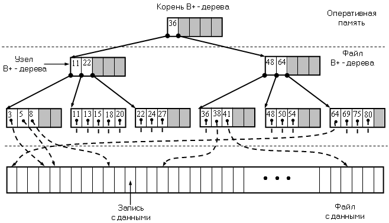 Поиск записей в B+ - деревеЕсли
требуется найти запись со значением
ключа k, нужно пройти путь от корня
до листа, который содержит запись. При
прохождении по пути последовательно
считываются из внешней памяти
внутренние узлы дерева (p0,key1,p1,
. . . ,keyn, pn) и
вычисляется положение k относительно
ключей key1, key2, . . . ,keyn считанного узла. Если
keyi
Включение записей в B+ - деревоВставка в В+ - дерево подобно вставке в 2-3-дерево. Если требуется вставить в В+ - дерево запись с ключом k, сначала выполняется поиск листа L, которому должна принадлежать запись. Если в L есть место для этой записи, то она вставляется в L в требуемом порядке. В этом случае внесение каких-либо изменений в предков листа L не требуется. Если же в блоке листа L нет места для записи, то у файловой системы запрашивается новый блок L1 и перемещается вторая половина записей из L в L1. Новая запись с ключом k вставляется в требуемое место в блок L или в блок L1. Допустим, узел Р является родителем узла L. Р известен, поскольку операция вставки ранее прошла от корня к листу L через узел Р. Теперь можно применить процедуру вставки, чтобы разместить в Р ключ key1 из узла L1 и указатель на L1. Ключ key1 и указатель на L1 вставляются сразу же после ключа и указателя на лист L. Значение key1 является наименьшим значением ключа в узле L1. Если Р уже имеет m указателей, вставка key1 и указателя на L1 в узле Р приведет к расщеплению Р и потребует вставки ключа и указателя в узел родителя Р. Эта вставка может привести к распространению расщепления на предков узла L вплоть до корня вдоль пути, который был пройден операцией вставки. Это может даже привести к тому, что понадобится расщепить корень. В этом случае создается новый корень, причем две половины старого корня выступают в роли двух его сыновей. Это единственная ситуация, при которой узел может иметь менее m/2 потомков.
Удаление записей из B+ - дереваЕсли требуется удалить запись со значением ключа k, выполняется поиск листа L, содержащего запись с ключом k. Если такая запись существует, то она удаляется из L. Если это первая запись в L, то в узле - родителе Р, устанавливается новое значение первого ключа key1 из L. Но если L является первым сыном узла Р, то первый ключ из L не фиксируется в Р, а появляется в одном из предков Р. Таким образом, распространяется изменение значений ключей по наименьшему значению ключа из L в обратном направлении вдоль пути от L к корню. Если блок листа L после удаления записи оказывается пустым, он отдается файловой системе. После этого корректируются ключи и указатели в Р, чтобы отразить факт удаления листа L. Если количество сыновей узла Р оказывается теперь меньшим, чем m/2, проверяется узел Р1, расположенный в дереве на том же уровне слева (или справа) от Р. Если узел Р1 имеет по крайней мере m/2+1 сыновей, то ключи и указатели распределяются поровну между Р и Р1 так, чтобы оба эти узла имели по меньшей мере m/2 потомков. Затем необходимо изменить значения ключей в родителе Р и, если необходимо, распространить изменения на всех предков узла Р, на которых это изменение отразилось. Если же у Р1 имеется ровно m/2 - 1 ключей и m/2 сыновей, то нужно объединить Р и Р1 в один узел с 2m - 1 сыновьями на базе узла P. Затем необходимо удалить ключ и указатель на Р1 у родителя узла Р. В свою очередь у родителя узла P может остаться меньше m/2 сыновей и процесс удаления перейдет вверх по дереву. Этот восходящий процесс удаления может распространиться до самого корня и, возможно, придется объединить только двух сыновей корня. В этом случае новым корнем становится объединенный узел, а старый корень можно вернуть файловой системе. Высота В+ - дерева уменьшается на единицу. |
||||||||||||||||||
|
|